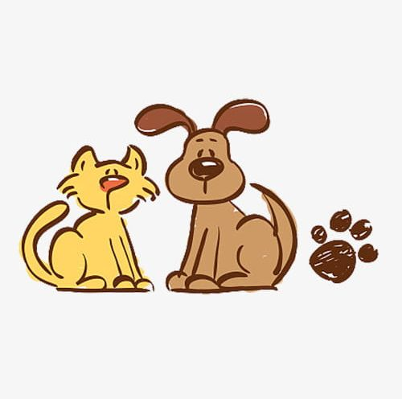

Source: imgbin
Source: imgbin
Our Mission
- Mission - Stop animal cruelty by promoting kindness, awareness, and responsible care, creating a world where animals are treated with compassion.
- Advocacy and Legislation - Advocate for more strict and less forgiving laws that demonstrate the importance of treating animals well, both locally and nationally.
- Education and Outreach - Provide resources and education to help highlight the issue and actively engage in communities.
- Rescue and Rehab - Aid in the rescuing of abused animals, providing as much resources as possible from the moment they are saved to the moment they find a loving home.